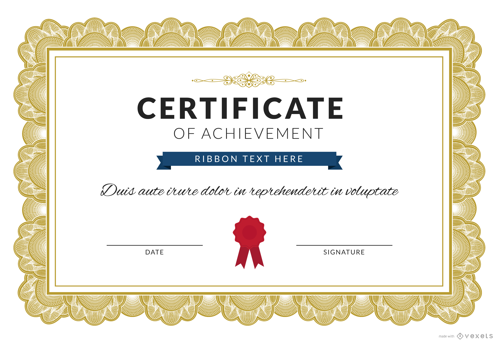

Monitor de Reforço Escolar
Ajude crianças com suas tarefas escolares e atividades lúdicas. Requer 4 horas semanais.
Ajude crianças com suas tarefas escolares e atividades lúdicas. Requer 4 horas semanais.
Auxilie no preparo e distribuição de alimentos para a comunidade. Turnos flexíveis.
Participe de mutirões de limpeza, plantio de árvores e ações de conscientização.
"Ser voluntário na Conecta ONG mudou minha perspectiva de vida. Ajudar o próximo é uma experiência incrivelmente gratificante."
Valorizamos cada minuto dedicado pelos nossos voluntários. Veja um modelo do nosso certificado simbólico de agradecimento.
